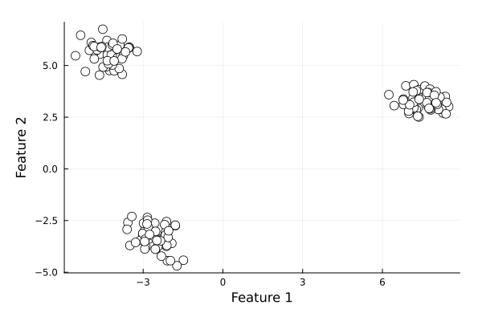

Model Evaluation
NovaML provides a range of tools and metrics for evaluating the performance of machine learning models. This page covers the main evaluation techniques and metrics available in NovaML.
Classification Metrics
Accuracy Score
Accuracy is the ratio of correct predictions to total predictions.
using NovaML.Metrics
y = [0, 1, 1, 0, 1];
ŷ = [0, 1, 0, 0, 1]
accuracy = accuracy_score(y, ŷ);
println("Accuracy: $accuracy")Following example load the Wisconsin Breast Cancer dataset, splits it to training and test sets and traing a logistic regression model with the training set. Then it calculates the accuracy_score for training and test sets.
using NovaML.Datasets: load_breast_cancer
X, y = load_breast_cancer(return_X_y=true)
using NovaML.ModelSelection
Xtrn, Xtst, ytrn, ytst = train_test_split(X, y, test_size=0.2,
stratify=y, random_state=1)
using NovaML.LinearModel
lr = LogisticRegression()
# train the model
lr(Xtrn, ytrn)
using NovaML.Metrics
ŷtrn, ŷtst = lr(Xtrn), lr(Xtst)
# training data accuracy
accuracy_score(ŷtrn, ytrn)
# test data accuracy
accuracy_score(ŷtst, ytst) Confusion Matrix
The confusion matrix provides a detailed breakdown of correct and incorrect classifications for each class. You can use confusion_matrix to create the confusion matrix and display_confusion_matrix to display it with labels.
using NovaML.Metrics
confmat = confusion_matrix(ytst, ŷtst)
# 2×2 Matrix{Int64}:
# 71 1
# 5 37display_confusion_matrix(confmat)
# 1 2
# ----------
# 1 | 71.0 1.0
# 2 | 5.0 37.0We can create a better looking confusion matrix plot using the following function:
using Plots
using Plots.PlotMeasures
function plot_confusion_matrix(confmat::Matrix)
n = size(confmat, 1)
heatmap(confmat,
c=:Blues,
alpha=0.3,
aspect_ratio=:equal,
size=(300, 300),
xrotation=0,
xticks=1:n,
yticks=1:n,
xlims=(0.5, n+0.5),
ylims=(0.5, n+0.5),
right_margin=5mm,
xlabel="Predicted label",
ylabel="True label",
xmirror=true,
framestyle=:box,
legend=nothing)
for i in 1:n, j in 1:n
annotate!(j, i, text(string(confmat[i,j]), :center, 10))
end
plot!(yflip=true)
display(current())
endplot_confusion_matrix(confmat)
Precision, Recall, and F1 Score
These metrics provide more detailed insights into model performance, especially for imbalanced datasets.
using NovaML.Metrics
precision_score(ytst, ŷtst)
# 0.9736842105263158
recall_score(ytst, ŷtst)
# 0.8809523809523809
f1_score(ytst, ŷtst)
# 0.925Matthews Correlation Coefficient
The Matthews Correlation Coefficient (MCC) is a balanced measure for binary classification problems. It takes into account true and false positives and negatives, providing a balanced measure even for classes of different sizes.
\[MCC = \frac{TN \times TP - FN \times FP}{\sqrt{(TP+FP)(TP+FN)(TN+FP)(TN+FN)}}\]
where
- TP: True Positive
- FP: False Positive
- TN: True Negative
- FN: False Negative
MCC ranges from -1 to +1:
- +1 represents a perfect prediction
- 0 represents no better than random prediction
- 1 indicates total disagreement between prediction and observation
using NovaML.Metrics
matthews_corrcoef(ytst, ŷ)
#0.8872442622820285ROC Curve and AUC
For binary classification problems, you can compute the Receiver Operating Characteristic (ROC) curve and the Area Under the Curve (AUC).
ŷprobs = lr(Xtst, type=:probs)[:, 2]
fpr, tpr, _ = roc_curve(ytst, ŷprobs);
# auc score
roc_auc = auc(fpr, tpr)
# 0.9923941798941799We can also plot the receiver operating characteristic curve using fpr and tpr values.
plot(fpr, tpr, color=:blue, linestyle=:solid,
label="Logistic Regression (auc = $(round(roc_auc, digits=2)))",
xlabel="False Positive",
ylabel="True Positive",
title="Receiver Operating Characteristic Curve")
plot!([0, 1], [0, 1], color=:gray, linestyle=:dash, linewidth=2, label="Random")Regression Metrics
We will use the Boston Housing Data in the section.
First let's import and prepare the data.
using NovaML.Datasets
X, y = load_boston(return_X_y=true)Prepare the training and test data sets.
using NovaML.ModelSelection
Xtrn, Xtst, ytrn, ytst = train_test_split(X, y, test_size=0.3, random_state=123)Create and fit the linear regression model.
lr = LinearRegression()
lr(Xtrn, ytrn)
ŷtrn = lr(Xtrn)
ŷtst = lr(Xtst)Mean Absolute Error (MAE)
MAE measures the average magnitude of errors in a set of predictions, without considering their direction.
using NovaML.Metrics
maetrn = mae(ytrn, ŷtrn)
maetst = mae(ytst, ŷtst)
maetrn, martst
#(0.07, 0.09)Mean Squared Error (MSE)
MSE measures the average squared difference between the estimated values and the actual value.
msetrn = mse(ytrn, ŷtrn)
msetst = mse(ytst, ŷtst)
msetrn, msetst
#(0.0093, 0.0128)R-squared Score
R-squared (R²) provides a measure of how well observed outcomes are replicated by the model, based on the proportion of total variation of outcomes explained by the model.
r2_score(ytrn, ŷtrn)
# 0.9992871136620213
r2_score(ytst, ŷtst)
# 0.9991476060812577Clustering Metrics
Silhouette Score
The Silhouette Score is used to evaluate the quality of clusters in clustering algorithms.
Let's first create an artificial dataset.
using NovaML.Datasets
X, y = make_blobs(
n_samples=150,
n_features=2,
centers=3,
cluster_std=0.5,
shuffle=true,
random_state=123)
using Plots
begin
scatter(X[:, 1], X[:, 2],
color=:white,
markerstrokecolor=:black,
markersize=6,
xlabel="Feature 1",
ylabel="Feature 2",
grid=true,
legend=false)
plot!(size=(600, 400), margin=5Plots.mm)
end
Next, create the clustering algorithm.
using NovaML.Cluster
km = KMeans(
n_clusters=3,
init="k-means++",
n_init=10,
max_iter=300,
tol=1e-04,
random_state=0)
km(X)Now we can create the Silhouette Plot using the silhouette_samples from NovaML.Metrics.
using Statistics
using ColorSchemes
using NovaML.Metrics
function plot_silhoutte(km::KMeans)
ykm = km.labels_
cluster_labels = sort(unique(km.labels_))
n_clusters = length(cluster_labels)
silhouette_vals = silhouette_samples(X, km.labels_, metric="euclidean")
δ = 1. / (length(silhouette_vals)+20)
yval = 10δ
p = plot(xlabel="Silhouette coefficient", label="Cluster", title="Silhouette Plot", legend=false, ylims=(0.0, 1.0), xlims=(0.0, 1.0), ylabel="Cluster");
for (i, c) in enumerate(cluster_labels)
c_silhouette_vals = silhouette_vals[ykm.==c]
sort!(c_silhouette_vals)
color = get(ColorSchemes.jet, i/n_clusters)
for xval in c_silhouette_vals
plot!(p, [0, xval], [yval, yval], color=color)
yval += δ
end
end
silhouette_avg = mean(silhouette_vals)
vline!([silhouette_avg], color=:red, linestyle=:dash, lw=2)
start = (1-20δ)/6
stop = (1 - 10δ) - (1-20δ)/6
yticks!(p, range(start, stop, length=n_clusters), string.(cluster_labels))
end